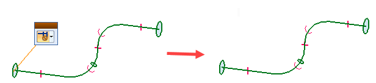
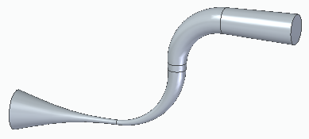
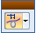
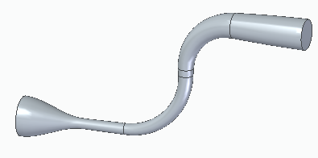

Swept Protrusion command bar
- Sweep Options
-
Displays the Sweep Options dialog box.
- Main Steps
-
- Path Step
-
Defines the path along which you want to sweep the cross-section to construct the feature. You can define up to three path curves. When defining more than one path curve, you must click the Accept button after you have selected the elements for the first path curve. Then select the elements for the next path curve and click the Accept button again.
When defining more than one path curve or cross-section, each path curve must be a continuous set of tangent elements or edges.
- Cross Section Step
-
Defines the cross-section profile which you want to sweep along the path.
- Axis Step
-
Defines a locking axis for the cross-section profile. This option is available when you construct swept features with non-planar paths and one or more cross-sections. A locking axis allows you to control twist in a swept feature.
When you select a locking axis (A), the cross-section elements and resultant surfaces maintain a fixed relationship with the plane that is normal to the locking axis direction, which is constant (B). With no locking axis specified, the cross-section elements and resultant surfaces maintain a fixed relationship with the plane normal to the path, which varies (C). In this example, you could also use the vertical line (D) in the cross-section sketch to define the locking axis. The path cannot be parallel to the lock axis at any point.

- Preview/Finish/Cancel
-
This button changes function as you move through the feature construction process. The Preview button shows what the constructed feature will look like, based on the input provided in the other steps. The Finish button constructs the feature. The Cancel button discards all input and exits the command.
- Path Step Options
-
- Plane or Sketch Step
-
Allows you to specify how you want to construct the feature:
-
Draw a new profiles on a reference plane—On the Create from Options list, select the reference plane option you want.
-
Use an existing sketch or part edges—Select the Select From Sketch/Part Edges option.
-
- Draw Profile Step
-
Allows you to edit the profile for an existing feature. A profile is a 2D curve that defines the shape and location of the feature. To create a base feature by protrusion, the profile must be closed. The Draw Profile Step is available only when you are editing an existing feature.
- Finish/Cancel
-
Finishes or cancels the profile you are drawing. This option is available only when you draw the profile for the path.
- Cross Section Step Options
-
- Relative Orientation
-
Specifies that the cross-section orientation will remain at the same orientation relative to the path curve throughout the sweep. This option is not available when constructing or editing a swept feature constructed in version 18 or later in the Part and Sheet Metal environments. You can use the Normal option on the Sweep Options dialog box.
- Fixed Orientation
-
Specifies the cross-section orientation will maintain its global orientation throughout the sweep. This results in a simple parallel or transitional sweep. This option is not available when constructing or editing a swept feature constructed in version 18 or later in the Part and Sheet Metal environments. You can use the Parallel option on the Sweep Options dialog box.
- Vertex Mapping
-
Displays the Vertex Mapping dialog box so you can define map points on the cross-sections to control the sweep. For every sweep, there will be at least one vertex map set. The start points for each cross-section define this set. You can use the dialog box to edit the default vertex map set, or to define additional vertex map sets. This option is available only when there is more than one cross-section in the sweep.
- Common Clamp Condition
-
Applies a common clamp condition to all cross-sections in the sweep, which eliminates bulges and sags between the cross-sections. This option is available only when there is more than one cross-section in the sweep.
- Show/Hide Clamp Control Handle
-
Controls the display of the clamp control handle.

This option is available only when there is more than one cross-section in the sweep.
- Clamp Control Handle
-
Controls the shape of the swept feature.
The handle has two options:
No Clamp
Specifies that no constraining condition is enforced on the cross-section.

Clamp to Section

Specifies that the cross-section is maintained for a length controlled by its magnitude handle.

This option is available only when there is more than one cross-section in the sweep.
- Edit
-
Allows you to edit the profile of an existing cross-section. This button is available only when editing a swept feature where the cross-section profile was drawn within the feature. For swept features constructed using sketches, you edit the cross section profile by editing the sketch.
- Cross Section Order
-
Displays the Cross Section Order dialog box. When you move the cursor over the name of a cross section listed on the dialog box, the cross section geometry highlights in the part window. Select the name of the cross section you want to re-order and then click the Up or Down button until it is in the correct position.
Note:This dialog box allows you to change the order of cross-sections that were created out of sequence. This can be especially helpful for adding a cross-section to an existing swept feature during an edit. You cannot use the re-ordering capability to create sweeps that fold back on themselves.
- Define Start Point
-
Allows you to define the cross-section start point. The start point must be at a vertex. The start point of a closed, periodic element is automatically defined by the software. This option is available only when drawing a profile for a swept feature.
- Plane or Sketch Step
-
Allows you to specify how you want to construct the feature:
-
Draw a new profiles on a reference plane—On the Create from Options list, select the reference plane option you want.
-
Use an existing sketch or part edges—Select the Select From Sketch/Part Edges option.
This option is not available if the last feature was a pattern or if you are constructing a base feature.
-
- Draw Profile Step
-
Allows you to edit the profile for an existing feature. A profile is a 2D curve that defines the shape and location of the feature. To create a base feature by protrusion, the profile must be closed. The Draw Profile Step is available only when you are editing an existing feature.
- Finish/Cancel
-
Finishes or cancels the profile you are drawing. This option is available only when you draw the profile for the cross-section.
- Plane or Sketch Step Options
-
- Create-From Options
-
Sets the method of defining the profile plane or specifies that you want to construct the feature using an existing sketch. Depending on the model you are constructing, some of the options listed may not be available. For example, if no sketches exist in the model, the Select From Sketch option is not displayed.
-
Select From Sketch/Part Edges—Specifies that you want to define the profile for the feature using an existing sketch or part edges.
-
Coincident Plane—Specifies that you want to define a plane that is coincident to an existing reference plane or a planar face on the part. When you set this option, a default X-axis and direction is applied to the new reference plane. You can use keyboard accelerators to define a different X-axis and direction for the new reference plane.
-
Parallel Plane—Specifies that you want to define a plane that is parallel to an existing reference plane or a planar face on the part. When you set this option, you can specify the parallel offset distance. When you set this option, a default X-axis and direction is applied to the new reference plane. You can use keyboard accelerators to define a different X-axis and direction for the new reference plane.
-
Angled Plane—Specifies that you want to define a plane that is at an angle to an existing reference plane or planar face on the part. When you set this option, you can specify the angle value you want.
-
Perpendicular Plane—Specifies that you want to define a plane that is perpendicular to an existing reference plane or planar face on the part.
-
Coincident Plane By Axis—Specifies that you want to define a plane that is coincident to an existing reference plane or a planar face on the part. When you set this option, you define the X-axis and direction for the new reference plane using a linear edge, a planar face, or another reference plane.
-
Plane Normal to Curve—Specifies that you want to define a plane that is perpendicular to a curve you select. This is the default option when constructing a helix using the Perpendicular option.
-
Plane By 3 Points—Specifies that you want to define a plane by three keypoints you select.
-
Feature's Plane—Specifies that you want to define a plane that is coincident to a reference plane used to define an earlier feature. You can select the feature you want using Feature PathFinder or in the graphic window. This option is not available when constructing the base feature.
-
Last Plane—Automatically selects the reference plane used for the previous feature. This option is not available if the last feature was a pattern or when constructing the base feature.
-
Tangent Plane—Specifies that you want to define a plane that is tangent to a curved face on the part. You can select a cylinder, cone, sphere, torus, or b-spline surface. When you set this option, you can also specify the angular rotation value. When you set this option, a default X-axis and direction is applied to the new reference plane. You can use keyboard accelerators to define a different X-axis and direction for the new reference plane.
-
- Select From Sketch/Part Edges Options
-
- Select
-
Sets the method of selecting a sketch element or part edges.
-
Single—Select one or more individual elements.
-
Chain—Select an endpoint connected set of elements by selecting one of the elements in the chain.
-
Loop—Select all the edges of an individual loop on a face by first selecting the face and then selecting a loop on the face.
-
Face—Select all the edges of a face by selecting the face.
-
- Deselect (x)
-
Clears the selection.
- Accept (check mark)
-
Accepts the selected sketch or part edges.
- Axis Step Options
-
- Maintain shape and size
-
Maintains cross section shape, size, and orientation when the path used to create the sweep crosses multiple planes.
- Other command bar options
-
- Next
-
Specifies that you finished defining paths and are ready to define cross-sections.
- Name
-
Displays the feature name. Feature names are assigned automatically. You can edit the name by typing a new name in the box on the command bar or by selecting the feature and using the Rename command on the shortcut menu.
How do I
Construct a swept protrusion or cutoutConstruct a Solid Sweep Protrusion
Construct a Solid Sweep Cutout
Learn more
Constructing swept featuresLook up more details
Swept Protrusion commandSweep Options dialog box
Swept Cutout command
Swept Cutout command bar
Solid Sweep Protrusion command
Solid Sweep Cutout command
Solid Sweep Cutout command bar